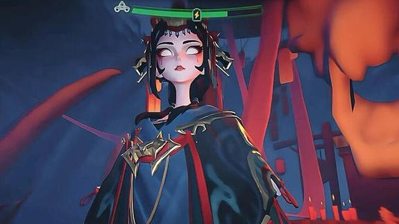

A third-party boss for a multi-team map, built to change how players fight each other rather than to be one more hard enemy.

In PvP, players watch each other: positions, resources, firefights. A boss that is only a big health bar gets focused down or avoided, and the match plays out the same as before.
So the goal was pressure from more than one source. Players should have to deal with rival teams and the boss at the same time, and the boss's behavior should push them to move.
We started from a hit-and-run assassin archetype common in PvPvE shooters: quick repositioning, short reveal windows, decoys and vision blocking. It created pressure, but in a busy firefight it read like an elite enemy, not a boss.
We kept every skill's intent and rebuilt the presentation around Nuo opera: water sleeves, the mask, chanting and puppets.
Instead of chasing players herself, she controls the field. Puppets placed around the map wake when she activates and hunt players; she can summon a giant Nuo form for an execution, and afterwards fallen puppets rise again.
Threats spread across the map, so players can't just watch one target, and her restrained, ceremonial movement makes her instantly recognisable.
Area control and puppet revivals change the conditions of a firefight: a safe angle stops being safe, one team has to relocate, the other gets a window to push. Her value is in how she shifts fights, not in how many players she kills.
I avoid describing only the result ("she dashes at the player"). Every skill is written as rules first, then the moments where animation, VFX, audio and UI fire.
You can fail the first time, but you should know why you failed.
Once you understand the rule, there is still a decision to make, not one fixed answer.
Right and wrong actions both show a visible result, so players can learn.
I first find the cause: a tight window is a tuning problem, not knowing why you died is a feedback problem, and one repetitive answer is a rules problem. Lowering damage is rarely the first fix.
A design is a hypothesis about player behavior. I write the rules, predict what players will do, then test whether they actually do it.